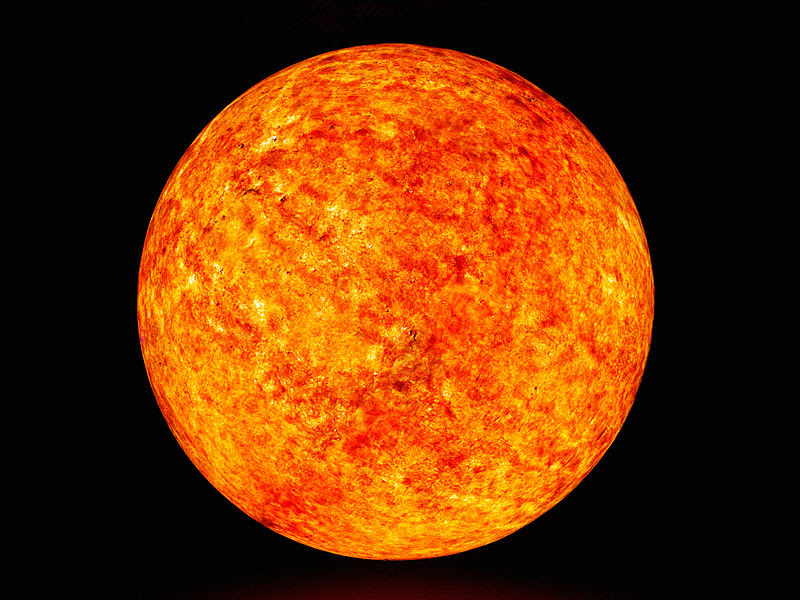

| NO. | CARACTERISTICAS |
|---|
| 1 | TEMPERATURA SUPERFICIAL: Las estrellas de tipo K tienen temperaturas superficiales que oscilan entre aproximadamente 3,900 y 5,300 Kelvin. |  |
| 2 | ESPECTRO:Su espectro está dominado por líneas de absorción de metales neutros y ionizados, como el hierro (Fe) y el calcio (Ca), así como moléculas como el cianógeno (CN) en las estrellas más frías del tipo K.Presentan líneas de hidrógeno menos prominentes que las estrellas de tipo G. |
| 3 | COLOR:Son de color naranja o naranja-rojo, debido a su temperatura más baja en comparación con las estrellas de tipo G. |
| 4 | BRILLO:Son menos luminosas que las estrellas de tipo G y más luminosas que las de tipo M. La luminosidad varía dentro del tipo K, con las subclases más calientes siendo más brillantes que las más frías. |
| 5 | EJEMPLOS NOTABLES:Alpha Centauri B (K1V), la compañera de Alpha Centauri A en el sistema estelar más cercano a la Tierra.Epsilon Eridani (K2V) en la constelación de Eridanus.HD 40307 (K2.5V) en la constelación de Pictor, conocida por tener un sistema planetario. |
| 6 | CICLO DE VIDA:Las estrellas de tipo K tienen vidas largas, significativamente más largas que las estrellas de tipo G, debido a su menor masa y menor tasa de fusión nuclear.
Estas estrellas pasan la mayor parte de su vida en la secuencia principal, fusionando hidrógeno en helio. Después de agotar su hidrógeno, evolucionan hacia gigantes rojas y finalmente terminan como enanas blancas. |